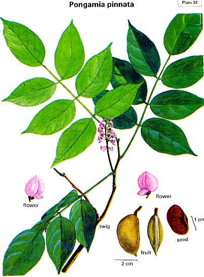

Pongamia pinnata
Taxonomic Details

----- Correct Name
----- Classification
----- Synonyms
----- Common Names
Other Biological Details
----- Habit and Habitat
----- Diagnostic Features
----- Reproductive Biology
---------- Breeding System
---------- Phenology
---------- Pollinators
---------- Seed Biology
-----------Seed Germination
-----------Cultivation
----- Major Pests and Diseases
Economic Potential and Uses
----- Parts Used
-----Uses
----- Harvesting Practices
----- Produce and Products
----- Chemistry
----- Processing Techniques
----- Other uses
----- Economic Potential to the Country
----- Export Potential
Miscellaneous Information
Literature
Taxonomic
Details
Correct Name
:Pongamia pinnata
(L.) Pierre
Family : Leguminosae ; Papilionaceae
Synonyms : Cystisus pinnatus; Cytisus pinnatus;
Derris indica; Galedupa indica; Pongamia glabra;
Common Names :
English: Indian beech,
Hindi: Karanj, Karanja, Karani, Papari,
Bengali: Karanj, Karanja;
Malayalam: Pungu, Punnu, pongu,Ungu, Unnu,
Tamil: Ponga, Pongam, Papri, Pongam oil tree,Ponka,
Telugu: Gaanuga, Pungu, Kaniga, Kanuga, Kanuga,Kanugacettu
Kannada: Honge, Honge mara,
Marati: Karanj, Karanja;
Misc:
Guj: Karanj, karanja;
Oirya: Koranjo;
Kumaun: Sukhchein,
karanj,
paphri ;
Assam: Karchaw.
Back to Top
Other
Biological Details
HABIT & HABITAT
A medium sized glabrous tree, with a short
bole: and spreading crown up to 18 m. high or some time even more and 1.5 m. in
girth, found almost throughout India, up to an altitude of 1,200 m. and distributed
further eastwards, chiefly in the littoral hills of south-eastern Asia and Australia.
Habitat: Along river banks, Along streams, Along the roads, Banas river, Banks
of River and streams, Beach forest, Coastal areas, dry deciduous forest, Forests,
Gardens and Roadsides, Hill slopes, In moist deciduous forest, Midlands, along
Rivers and Streams, Mixed forests, Moist deciduous forest, Plains, Ravines, River
banks, Road sides, Sandy beds of Streams, Tidal forest, Villages and waste
lands.
BioticZone: Central Himalayas, Eastern Himalayas, Himalaya, Konkan plain,
Tropics, West Coast and Western Ghats.
Availability :
Misc: Ahobilam, Alibag fort, Avenue tree, Bada-Bag, Balli, Balod, Banks of
streams, Bhironde, Bisalpur, Butpal-Ordofond, Canacona, Chaul, Codal, Dudeni,
Dugli, Durg, Five falls, Ghotge, Jahajpur, Jharda, Kargal jungle, Kerude,
Madhavaram, Mahaballeshwar, Mahad, Mainpur, Manasagangotri, Margao-Raija
village road, Markandey hill, Mascarene Isles, Matheran, Mount Abu, Nala,
Narsapur Reserve Forest, Nedumkayam, Nilambur, Netravali, Ordofond, Peccheruvu,
Raipur, Rajnandgaon, Ramanapenta, Ravines
of Katraj ghats, RBS College Garden, Reserve forest, Roha, Salcete, Near Margao,
Sanguem, Satari, Sawarna, Tolpetty, Tondwal, Trimbak, Trombay, Verlem, Walayar
forest, Wani range and Zari.
Country: Australia, India, Malaya, Malayasia, Myanmar, Polynesia, S.E.Asia, Sri
Lanka, Tropical America and Tropical Countries.
Zone: Central, East, Islands, North, North East, South and Westzone.
State: Andaman & Nicobar, Andhra Pradesh, Arunachal Pradesh, Bihar, Goa Daman
Diu, Karnataka, Kerala, Madhya Pradesh, Maharashtra, Rajasthan, Tamil Nadu,
Uttar Pradesh and West Bengal.
District: Agra, Andaman, Balaghat, Bangalore, Bastar, Belgaum, Bellary, Betul,
Bhilwara, Bhopal, Bidar, Bilaspur, Bombay, Cannanore, Champaran, Chandrapur,
Damoh, Dhar, Dharwad, Durg, Hassan, Hoshangabad, Indore, Jabalpur, Jaisalmer,
Kodagu, Kolar, Kota, Kurnool, Malappuram, Mandla, Medak, Mysore, Nasik, Nicobar,
Palaghat, Palani, Panna, Pune, Raichur, Raigad, Raigarh, Raipur, Rajnandgaon,
Rewa, Satara, Shimoga, Sindhudurg, Sirohi, Tirunelveli, Tonk, Tumkur, Uttar
Kannada and Yawatmal.
Taluk: Abu road, Igatpuri, Kankavli, Kudal, Pachmarhi, Sinnar, Tenkasi and
Wadgaon.
Status :
Back to Top
DIAGNOSTIC
FEATURES
Bark greyish green or brown, smooth or covered
with Blercles; leaves imparipinnate: leaflets 5-7, ovate elliptic; flowers lilac
or white tinged with pink or islet, fragrant, in axillary racemes ; pods compressed,
woody, indehiscent, yellowish grey, varying in size and shape, elliptic to obliquely
long, 4.0-7-5 cm- long and 7-3-2 cm. broad, with short curved beak ; seeds usually
1 rarely 2, elliptical or reniform, 1.7-2.0 cm. long and 1.2-1.8 cm. broad,
wrinkled, with reddish brown leathery sta.
Back to Top
REPRODUCTIVE BIOLOGY
Breeding System :
Phenology :
The flowering occurs during
February-September
Pollinators:
Seed Biology :
Seed Germination :
Natural reproduction is through seed or by root suckers. The seeds are said
to retain viability for a year. Artificial regeneration is carried out through
direct sowing or transplanting one-year old seedlings in nursery. Root or shoot
cuttings can also be used for this purpose.
Cultivation :
Seedling survival and growth benefit from annual
weed control for the first 3 years after transplanting. Growth of young trees
is fairly slow; a growth of 1.3 m in height and 0.4 cm in diameter in 13 months
was recorded in India. Trees coppice well and can also be pollarded. When planted
as a shade or ornamental tree, pruning may be necessary to obtain a trunk of
appropriate height. The spacing adopted in avenue planting is about 8 m between
plants. In block plantings, the spacing can range from 2 x 2 m to 5 x 5 m. The
lateral spread of roots on this species, about 9 m in 18 years, is greater than
most other species; moreover it produces root suckers profusely. Because of
these characteristics, pongam is unsuitable for agroforestry and has the potential
to become a weed if not managed carefully. Individual trees yield 9-90 kg of
pods annually, while mature trees yield 8-24 kg of seeds annually.
Back to Top
MAJOR PESTS & DISEASES
Pests:The tree is attacked by a large number of insects and it is a host for
the lac insect.
Diseases:
Back to Top
Economic
Potential and Uses
Parts used
Leaves.
Uses
-
Leaves-The leaves are lopped for fodder. They arc rich in nitrogen. They
are popular as green manure for rice and sugar cane fields, areca gardens and
coffee plantation. Green manuring with the leaves is reported to reduce the incidence
of root-knot of tomato, caused by Meloidogyne javanica. Extracts of the leaves
is active against Micrococcus pyogenes.
-
Fodder: Opinions vary on the usefulness of P. pinnata as a fodder; its value
is greatest in arid regions. The leaves can be eaten by cattle and are readily
consumed by goats however it is not common. The leaves contain 43% dry matter,
18% crude protein, 62% neutral detergent fibre, and in vitro dry matter digestibility
of 50%. The press cake (seed residue) after oil extraction is bitter and unfit
for use as a sole animal feed. It is high in protein but posses several toxic
factors, particularly karanjin, pongamol and tannin. It is suggested as a short-term
substitute for other protein sources but never serving as more than a 75% replacement.
- Apiculture: Pongam flowers are considered a good
source of pollen for honeybees in India and they yield adequate nectar.
Harvesting Practices
The tree starts bearing at the age of 4-7 years. The fruits come to harvest at
different periods of the year in different parts of the country. The harvest season
extends in general from November-December to March, The pods arc
collected and the shells are removed by hand. The yield of seed is said to
range from 9 to 90 kg. per tree.
No organized collection of seed is undertaken and a large part of the produce
is not collected. The quantity actually collected in different parts of the country
varies from about 75 per cent of the potential production as in Mysore, to a low
figure of just about 2 per cent as in West Bengal. The total quantity available
for collection in the country is estimated at about 97,000 tones against the
actual collection of only 11,500 tones. The yield of oil varies according to the methods of extraction; in general,
it is 24.0-27 per cent from the expellers and 18-22 per cent from village crushers
Produce and Products
- Fuel: With a calorific value of 4600 kcal/kg, pongam
is commonly used as a fuelwood. The seed oil was formerly indispensable as an
illuminant in lamps, but has been largely replaced by kerosene.
Fibre: The bark fibre is made into string, twine
or rope, and the wood provides paper pulp.
Timber: Wood varies from white to yellowish-grey
with no distinct heartwood; beautifully grained and medium to coarse textured.
Although it is a moderately strong timber that is relatively easy to saw, turn
and finish, the wood is not considered a quality timber because it is not durable,
tends to split and warp during seasoning and is susceptible to insect attack.
The wood is used for cabinet making, cartwheels, posts, agricultural implements,
tool handles and combs.
Tannin or dyestuff: Roots yield a natural pigment,
pinnatin, which was synthesized in 1967. The wood ash is employed in dyeing.
Oil from the seeds is used for leather dressing in tanning industries.
Lipids: Oil is the most important product of the
pongam tree and vast amounts of seeds are collected in India for commercial
processing of industrial uses. It has been found that the seed contains 27-40%
of a thick, yellow or reddish-brown oil and that 2 kg of mature pods will yield
about 1 kg of husked kernels. Extracted oil amounts to 13.4% of the whole seed
pod; 26.97% of the kernels. The oil has a bitter taste, a disagreeable aroma
and a specific gravity of 0.9371 at 15 deg. C. It is used as a lubricant, varnish,
water-paint binder and in soap making. It is one of the few nitrogen-fixing
trees to produce seeds containing oil.
Poison: The press cake, when applied to the soil
is valued as a pesticide, particularly against nematodes. In rural areas, dried
leaves are stored with grain to repel insects. Pounded and roasted seeds used
to be utilized as fish poison.
Medicine: The seed oil is rubbed as liniment on
skin diseases and rheumatic parts. Internally, it is given as a stomachic and
cholagogue in dyspepsia and cases of sluggish liver. A seed powder is given
as an expectorant in bronchitis and whooping cough, and is also prescribed as
a febrifuge and tonic. Seed paste is spread on sores and rheumatic parts. An
infusion of the leaves is used to relieve rheumatism, a decoction is a cough
remedy, expressed juice is used on herpes and itches, and when they are crushed,
applied as a poultice for the treatment of parasitic skin diseases. The flowers
are claimed to have anti-diabetic action. Fresh stem bark is applied to reduce
the enlargement of the spleen. It is astringent and taken internally to relieve
bleeding heamorrhoids while a poultice of young leaves is laid on externally.
The root bark contains a bitter alkaloid and is employed by the people of Guimaras
Island in the Philippines as an abortifacient. The antiseptic root juice is
put on sores and ulcers and used to clean teeth.
Other products: In India, the tree is a host for
the useful lac insect. It is also used as a host for the hemiparasitic sandalwood,
Santalum album L.
Back to Top
Chemistry
Analysis of a sample of air-dried kernels (from Waltair) gave the following values:
moisture, 19.0; fatty oil, 27.5; protein, 17.4; starch, 6.6; crude fibre, 7.3
; and ash, 2.4%. The seeds contain a mucilage (13.5%), traces of an essential
oil, and a complex amino acid named glabrin (C^H^^O^Na, m.p. 290° decomp.).
Four furanoflavones, karanjin (CigH^O,, m.p. 158.5°), pongapin (C^H^Oe, m.p.
190-91°), kanjone (CigHisO^ m.p. 191°), and ponga glabrone (CigHioOg.^H^O,
m.p. 233°), and a diketon pongamol (C^H^O,,, m.p. 128-29°) have been-
isolated from the Indian seeds. Seeds from Australia contained only pongapin.
Karanjin and pongamol, which are associated with non-glyceride portion of the
oil and have a bitter taste, are the major flavones of the seeds ; other flavones
occur as minor components. The presence of a hypotensive principle and a substance
producing marked uterine contractions has been reported. Seeds and immature pods
from Australia gave positive tests for the presence of alkaloids
Back to Top
Processing Techniques
Back to Top
Other Uses
-
It resists drought well, is moderately frost-hardy and highly tolerant of salinity.
It is a shade-bearer and is considered to be a good tree for planting in pastures,
as grass grows well in its shade. The tree is used for afforestation, especially
in water sheds, in the drier ms of the country.
- The seeds contain 27-39 per cent of fatty oil, which is used for leather dressing,
soap making, lubrication, illumination, and for medicinal purposes.
- Seed oil: The main use of Pongamia oil is in the tanning industry for the
dressing of E.I. leathers. A process has been developed for the preparation of
sulphated Pongamia oil which can be used for making fat liquors suitable for the
leather industry. The oil finds use to a certain extent in the preparation of
washing soaps and candles. It is more suitable for this purpose after refining,
since crude oil produces a soap with objectionable colour and odour. The purified
oil can be used unto the extent of 25 per cent in the soap stock without affecting
the quality of the soap. Partially hydrogenated pongamia oil can replace hardened
groundnut oil in laundry soaps
- Seed cake-The cake left after expression of oil has a bitter taste and
is unsuitable for feeding livestock. It has high nitrogen content and is mostly
used as manure. In Mysore, it is used by sugarcane growers and gardeners, as it
repels red ants. The cake is also valued as manure for coffee and is also reported
to reduce the incidence of root- knot-of tomato caused by Meloidogyne javanica
(Treub.) Chit woo. It is found to nitrify the soil considerably.
- Wood-The wood is used for yokes of bullock carts, ploughs, solid cart-wheels,
rafters of thatched cottages, oil mills, furniture, small turnery articles such
as planes, chisels, and screw drivers. Its use as pattern wood and as veneer for
plywork has been suggested. The wood has been tried as a source of paper pulp
in admixture with other hardwoods. The wood is commonly used as fuel: calorific
value-4,839 cat., 8,710 B.t.u. The wood ash is reported to be used in dyeing.
The twigs are used for cleaning teeth (Pearson & Brown.
Back to Top
Economical
Potential to the country
Back to Top
Export Potential
Back to Top
Miscellaneous
Information
Back to Top
Literature
- Flora of Mysore,R.Raghavendra Rao & Basheer Ahmed Razi,1981,R.R.Rao
- www.treeandseeds.com home1.htm
Back to Top